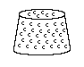
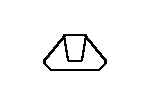
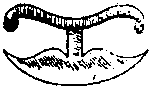
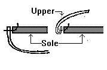
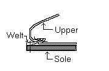

Glossary of Footwear Terminology, T
Tab
Closed and open tab; short extension of the quarters having eyelets for lacing.
[Goubitz, 2001]
Tacks
(Lasting Tack)
Small nails used in lasting. May also be used to refer to small nails
used in the heel assembly. Holme shoes the tacks as

Tack hole
A hole left by the lasting tack that held the shoe parts to the last so they could be
sewn together. [Goubitz, 2001]
Tag (Aigulet, Lace End)
- The binding, usually metal (now plastic) at the end of a lace for leading through holes.
It may be made from a spiral wire. Some methods of lacing require a single tag only, the
other lace and being knotted or stitched inside the shoe. [Thornton/Swann, 1983]
- Tag (Lace) metal or other cover for reinforcing a tie-lace end. [Goubitz,
2001]
- The term "Aglet" dates back to the 15th century, but it is not clear when it
began to be used for shoelaces [OED 2d Ed.]. Medieval tags, when they were used, were
almost invariably made from coiled metal [Saguto].
Tailed toggle
A fastening knob made of a leather thong knotted in the middle, with one end fixed to
the shoe, the other end loose and having a tapering end like a tail. [Goubitz, 2001]
Taking Off
Removing the shoe from the Last. [Devlin, 1840]
Taking-off brushes
Brushes for polishing, made of the tail or mane hair of the horse. A separate brush should
be used for each color.Tallow
This refers to the
rendered fat of either sheep or cattle. [Lystyne lordys verament]
Tanner's cuts
A short and shallow cuts on the flesh side of the leather caused by scraping off flesh and
fat remains on the hide. [Goubitz, 2001]
Tanning (Also
called Barkynge Latin: Frunicio).
Turning raw or green hides into leather. There are several versions of
this, but most involve making a chemical change by steeping in the leather
through infusion of various vegetable tannins. First we have Vegetable
Tanning. There is the historical Pit Tanning, in which the hides are soaked in
vats of liquors of rich tannin solution for months. Frequently these solutions
are made from ground barks of various trees. Today we have Drum Tanning, in
which the hides are run in drums full of highly concentrated extracts of tannin
solutions. This takes only a matter of weeks. These two forms of tannage each
yield a very different product with different properties. See also
Combination Tannage, Oil Curing, Smoke Tanning, Tawed
leather.
- The conversion of rawhide into leather by steeping in tannin. [Thornton/Swann, 1983]
- (Bark tanned) leather vegetable tanned by the tannins contained in the bark of trees,
the leather in process is in contact with the raw bark.
[www.shoeworld.co.uk/shoeworld/help/glossary.html; www.cityintl.com/footwear/]
- The treatment of skin with tanning agents to render it durable, resilient, hard-wearing,
and soft. There are two main types of tanning. [Vass]
- Vegetable tanning, in which skins are tanned in pits with plant extracts such as spruce,
oak, or alder wood; oak galls, pomegranates, or acorn seed husks. It is mainly the lower
parts of the shoe that undergo vegetable tanning. [Vass]
- Mineral tanning, in which skins are tanned in drums with alum or chromium
salts, the latter shortening the otherwise protracted tanning period to six or seven
weeks. It is mainly the upper leather that undergoes mineral tanning. [Vass]
Tanning pits (pit tanning)
Lined oak or cement pits fur vegetable tanning. Layers of skins are placed in the pit -
alternating with plant extracts - submerged in tanning liquor, and left to soften for a
certain period of time. [Vass]Tatching End (Tachynge)
See Waxed End [Promptorium Parvulorum]
Tawed leather
(Latin: Alluta)
Leather that was not tanned, but rather cured with mineral salts, specifically
alum. Cordwain was originally made of tawed and dyed Mouflon skin, as were many
shoe overleathers. Unfortunately these may have lost their mineral salts and
reverted to an easily decomposed raw state. See also Combination Tannage,
Oil Curing, Smoke Tanning, Tanning.
Taws
The thin, pointed ends of the thread.
Textile cover
All of the shoe, except for the underside of the sole, may be covered with textile as
embellishment. [Goubitz, 2001]
Thimble
Thimbles are used to
protect the thumb from needles while stitching.

Used to protect the thumb from needles.
Thombys blake
This phrase appears in
the Lystyne lordys verament, and the meaning is unclear. Black thumbs
could be from cering thread with code or possibly from blacking the shoes with
some sort of paste.
Thong
(Other medieval spelling include Thonging, �wang, Wang, Whang)
Thonging used sew stitch with. Not commonly used in Medieval shoes, but it is
used in areas where thread has been more expensive. For example, leather
thonging has been found in Britain in construction roles that are filled by
thread at the same time on the Continent. In later Saxon shoes and Scandinavian
shoes it�s sometimes found in the inseam
- Narrow leather thonging is found in Roman nailed shoes (a) for holding the various
bottoming sections together; (b) for bracing (q.v.) the upper during lasting. In early
Saxon shoes it was used to sew the upper to the bottom in turn-shoe construction (q.v.)
passing through a rib round the margin of the flesh side of the sole. It was later
replaced by thread. Thonging is also used as a shoe tie in various positions on the upper.
[Thornton/Swann, 1983]
- Used in early Celtic and Norse hide shoes to sew the main seams together and are
frequently made in a piece with the shoe itself.
- Used in 19th and 20th century (rural) shoes to sew uppers together [Foxfire 6]
Thread
- A fine cord of flax
(linen), hemp, or silk.
- A fine cord of flax, cotton, silk or other fibrous material spun out to considerable
length, especially when composed of two or more filaments twisted together as in spun
cotton or silk filament. [Webber, 1989]
Threaded keeper strap
The vertical thong that is passed in a serpentine pattern through horizontal slots,
creating loops on the legs of high shoes with a thong fastening. [Goubitz, 2001]
Throat
- The central portion of the part of the Vamp which rests on the Instep. It can be square,
peaked, round, and other shapes. [Thornton/Swann, 1983][Webber, 1989]
- The rear end of a vamp, often as an extension lying over the instep of the foot or
reaching up the shin in boots. [Goubitz, 2001]
Through Sole
A sole extending the whole length of the shoe from toe to heel. Mid or middle should
be used if it is between sole and insole. [Thornton/Swann, 1983]Thumb-Leather
(also Thumb stall)
A piece of leather wrapped around the thumb to protect it when stitching, or
yerking the thread, or drawing it tight. Might be a Medieval tool.
Tibracis
An Anglo Saxon term for a form of leather boot
Tickler
See Stitch Prick
Tie Holes
See Eyelets
Tie Lace
(See Bifurcated strap)Tie Slots
Slits round the ankle or leg, often in pairs, to take a lace. [Thornton/Swann, 1983]
Ties
See Latchet . [Devlin, 1840]Toe Box
See Toe Lining
Toe Cap
- See Toe Lining
- External: that part of the upper that corresponds in shape to the internal toe lining
[Vass]
- An external toe reinforcement. [Goubitz, 2001]
Toe Case
- See Toe Lining
Toe Extension
After c1900, shoes began to have overly long toes with receding profiles [Saguto].
Toe Lining (Box, Toe Box, Toe Case, Toe Puff, Toe
Stiffener)
- A reinforcement under the toe-end of the vamp; an internal shaped stiffener.
[Thornton/Swann, 1983] "Toe Lining" is the oldest term, c1688
[Holme, 1688][Saguto][Martin, 1745] in French "Paton" [Garsault, 1767]. Toe
Box as a term seems to come along next in the later 19th c, when shoe linings for
men's uppers came back into style around 1880. After this, the
term Toe Case was used [Saguto]. After about 1910, shoes began to
have 'extended toes', and the high point of the toes on the last was called the Toe
puff, which then transferred in England to the stiffener that was formed over it. In
the US, this is still the Toe Box. [Saguto]
- Internal leather stiffener at the tip of the shoe. It is used in shoes with a one-piece
upper, in which case it is not immediately apparent whether the shoe was made with or
without a toe cap. If the vamp is divided, the toe cap can have a straight (semi-brogue)
or winged (full-brogue) shape. [Vass]
Toe Puff
- See Toe Lining. It should be noted that in
England this is the most current term for this part of the shoe,
hence Goubitz's 'internal reinforcement for the toe.'
Toe shapes
- The shape of the toe portion of the shoe will be dictated by society (fashion, class,
etc). These shapes can include: Needlepoint, through pointed, blunt point, oval,
round, square, rounded off square, domed (or high square) forked, flared, eared (or
horned), cowmouthed (or bear pawed), and may be shallow or American (alias Boston,
bulldog, bump). There are also peep and open toes. [Thornton/Swann, 1983][Webber, 1989]
- The form of the shoe's toe, which can be a model and date determinant. [Goubitz, 2001]
Toe Spring
the elevation of the toe-end of a shoe sole above a horizontal surface on which a shoe is
standing. [Thornton/Swann, 1983][Webber, 1989]Toggle
In archaelology and museums the term toggle is used to describe a knob that must be
pushed or pulled through a slit to fasten a shoe's closure, this term is considered more
accurate than button. [Goubitz, 2001]
Toggle-hole strap
A short strap on the medial side of the fastening opening with a slit hole in it
corresponding to a toggle on the lateral side. [Goubitz, 2001]
Tongue
A piece of leather
frequently placed between two sides of a tied opening. They most often extend
up and back from the vamp throat in front-lacing boots or shoes. Sometimes
laces will pass through the tongue.
- A backwards extension, either integral or pieced on, from the vamp throat (q.v.) resting
on the instep of the foot. It may be an insert used to cover an opening at the vamp
throat. Latchet ties (q.v.) may pass over or under it and sometimes there is a pair of
holes through which the tie string passes.[Thornton/Swann, 1983]
- It can have a utilitarian purpose or it may be purely decorative. Tongues vary a great
deal in shape; for example, they may be rounded, peaked, forked, or rectangular. [Webber,
1989]
- A piece of leather sewn into the fastening opening to stop dust or water from entering,
or a backwards extension of the vamp, lying on the instep of the foot. [Goubitz, 2001]
- A leather flap attached to the inside or outside of the upper to protect the lacing area
from friction, pressure, and penetration by extraneous objects. It also often functions as
a decorative component. [Vass]
Tongue Insert
A development from the "pucker" seam, but rather than leaving an opening, a
piece of material is inserted to act as a tongue in the same fashion as an
"apron" in a modern pair of loafers. 
Top band (Edge Binding)
- A narrow strip of leather or other material which is stitched to the top edge of the
quarters (or legs of a boot) for strengthening or for decorative purposes. A top band may
be sewn on as a casing so that a drawstring can be inserted, which can then be tied
[Webber, 1989] It is very common in Germanic shoes. After 1700, the purpose for a Top Band
is to hold a lining in.
- The top of uppers. [Thornton/Swann, 1983]
- A strip of leather sewn all the way around the opening of a boot as an edge finishing.
[Goubitz, 2001]
- See Edge Binding
Toe Bug (Toe Flower)
This refers to the decorative appearing stitching on the vamp of a western boot.
This stitching serves to control the wrinkle pattern of the boot. [Frommer]Top lift
The final and under-most lift of a heel, being added to the heel when the shoe is upside
down; hence from the shoemaker's point of view it is the top lift. [Goubitz, 2001]
Topline
(Top edge, Top line)
The top-most portion of an overleather.
- The top edge of that upper. [Webber, 1989]
- The highest continuous edge of the upper, regardless of its shape. [Goubitz, 2001]
Top Piece
The bottom section of a heel which actually rests on the ground. [Thornton/Swann, 1983]
[Vass]
Top-sole seam
This seam joins the welt to the top sole (in single-soled shoes) and to the middle and top
soles (in double-soled shoes). [Vass]
Tranchet
A modern term for a specific form of French clicking knife that is
held along the arm for use, seated in the crook of the arm [Saguto]
Translator
A person who translates,
or remakes old shoe parts into a new shoe, i.e. a cobbler. Note that when
dealing with medieval shoes, it may be not be possible to tell a translated shoe
from one that�s merely been resoled, or half resoled, for its owner.
Translation
Remaking a old shoe into a new shoe. [Saguto] This may be difficult to distinguish
from a completely resoled shoe.
Treadline
(Tread,)
The treadline is the widest part of the shoe sole, corresponding with the joints
of the foot..
- The widest part of a sole forepart in closest contact with the ground. [Thornton/Swann,
1983][Webber, 1989]
- Tread/joint The area under the foot where the toe bones meet the foot bones and
the foot bends when walking. [Goubitz, 2001]
Treadline (Joint)
- the indeterminate area across the tread where the foot bends when standing on the toes.
[Thornton/Swann, 1983]
- (Inside, Outside Joint) The Inside Joint is the end of the first
metatarsal, and the Outside Joint is the end of the fifth metatarsal. [Webber, 1989] See
Ball.
Treadsole
(See Outsole) Goubitz uses this term to refer to "the undermost sole of footwear, facing the
ground", in other words, the Outsole. I can not identify where he got
this term. It may be a flawed translation from a Dutch or German term
for the outsole.
The OED describes a 'treadsole' as an obsolete term for a door-sill.
Tree (Last, Stretching)
A last-like wooden form used to keep the shape of shoes when they are not being
worn. These are a 19th century item for shoes, and 18th
century for riding boots.
Trenching
See Clicking. [Devlin, 1840]Trenchowre
(Latin: Scissorium)
This term may refer to scissors, shears or a sort of knife.
Trenket
(Other medieval spellings include: Tranchet, Trenchet Latin:
Ansorium, Axorium. Also: Cutting Knife, Carving Knife, Shaping knife,
Shaving Iron. Modern terms include: Half Moon Knife, Head
Knife, Round Knife)
See Also (Tranchet)
A shoemakers cutting knife, or shaping knife. I believe this refers to the
spiked round knife that the iconographical attribute in pictures of shoemakers
from the period. It is, as you can see, a variety of what is today
referred to as a "Head Knife" and a "Half Moon Knife". It is used to "trench" or
"click" or cut out the leather, and possibly to skive some pieces of leather. It derives from the Old French, Trechet, and the old
French (Picard) Trenquet. It should be noted that today the meaning of tranchet is a
totally different sort of knife.
- Das Hausbuch der Mendelschen Zw�lfbr�derstiftung zu N�rnberg.show
the Trenket as:

- Salaman displays it like this:
 .
.
- Holme shows the Cutting Knife
as this:

- The Museum of London has in their display cases:

- This example, is from Stockholm, as shown in Dahlb�ck, G�ran (ed). Helgeandsholmen,
1000 �r i Stockholms str�m. Stockholm: Stockholmsmonografier utgivna av Stockholms
kommun LiberF�rlag, 1983.

- Srtryk ur Uppgr�vt f�r PKbanken i Lund. shows other Scandinavian examples

Trenket/Trenchet of Cordwainers
A group of shoemakers [Boke of St. Albans fvij, OED, MED]
Trial shoe
[Vass] See Fitter's ModelTunnel Stitch (Caterpillar Stitch)
- Modern terms used to describe seams used to invisibly attach a new piece of leather,
e.g. a clump sole (q.v.) on top of an old one. The holes enter the surface of each piece,
pass for a short distance through the substance (between grain and flesh) and then
reappear on the same side. [Thornton/Swann, 1983][Webber, 1989]
- A sewing technique in which the thread is passed in a serpentine pattern through
'tunnels'; it passes for a short distance into the thickness of the leather before
reappearing on the same side and then passing to the adjoining piece of leather in the
same manner, making a stitch that cannot be seen from the outside of the seam . [Goubitz,
2001]
- A "Courture de parade" [Garsault, 1767], or display seam, also split sewn with
a curved awl so that the thread is only seen on one side of the leather. [Saguto] This is
sometimes seen on medieval shoes as a form of decoration.
Turn welt
(also Turned-welt)
This modern term presupposes that there is a significant difference between the
welt in a single soled shoe , and that in a double soled shoe.
Turned-Welt Construction (Turned Welt; Turnwelt)
- A transitional form of a shoe between the randed turnshoe, and the modern welted shoe,
appearing c.1400. A turnshoe which has a strip of leather, called a Welt and wider than a
Rand, sewn between the vamp and the insole, to which a second, thicker sole is attached
[Thornton/Swann, 1983]
- Turn welt The rand is sewn between upper and sole of a turnshoe, but is made
extra broad so that a second sole can be stitched on; the rand will show two rows of
stitch holes if used in this way and is then called a turn welt. [Goubitz, 2001]
Turning stick
(Turn stick, Turning Styk)
A stick that is used to help turn a turned shoe right side out after it is
removed from the last. The 19th century ones are about 12� long with
a mushroom like head to put against your chest when pushing.Turn-shoe
(Turned shoe, Turned Work, Turnshoe)
A type of shoe that is made inside out and turned �rightside out�, so that the
seams are on the inside. The term is not medieval, but only appears as late as
the 19th century
- This is a type of shoe where the separate upper and sole are sewn together, using the Turnshoe
construction described below, inside-out, it is reversed (rightside out) so that the
sewing is protected by being on the inside. The medieval turnshoe also has the uppers
closed with the Edge-Flesh stitch (1). There is some evidence [van Driel-Murray and
G�pfrich] that the Romans may have had turnshoes as early as the 4th century, although
this is not clear. There are Coptic remains of turnshoes before the 8th century, and they
seem to appear in first in Europe by the 8th century. Turnshoes were apparently introduced
to England by the Saxons.
- Shoes made inside-out on the last, with one sole layer; after the sole seam is finished,
it is turned right side out whereby the seams are situated inside the shoe. [Goubitz,
2001]
- This term has also been used, though more generally, and not by the principle scholars
in the field, to refer to any shoe that has been sewn inside out, and turned right-side
out regardless of how the sole is attached to the upper, or the seams used in closing the
uppers. [Webber, 1989]
Turnshoe Construction
The shoe is made inside-out (with the flesh side outward) by sewing the lower edge of the
upper to the edge of a single sole using an Edge-Flesh stitch (2). The shoe is then
turned the right way round so that the grain side of the leather is on the outside of the
shoe and the sole seam is now inside. [Thornton/Swann, 1983][Webber, 1989]

Turnshoe Mallet
A mallet that is used to flatten the inseam on a turn-shoe. The term is
given in Salaman
Turnsole
An erroneous term for the turnshoe. A "Turnsole" is a kind
of plant that includes Sunflowers and Heliotropes.
Turnstick
A stick used to help push the toe of a turnshoe while turning the shoe right side
out. The
term is given in Salaman.
Turned-Welt Construction (Turned Welt; Turnwelt)
A transitional form of a shoe between the randed Turnshoe, and the modern welted shoe,
appearing c.1400. A turnshoe which has a strip of leather, called a Welt and wider than a
Rand, sewn between the vamp and the insole, to which a second, thicker sole is attached 
Turned Work
See Turnshoe Construction.
Twist
(Latin: Licino)
Hard twisted thread. This term in English may not be medieval, although
the Latin is.
A type of silk thread, twisted hard (See Barber's Twist).
[Devlin, 1840] I believe it is this that John de Garland refers to in his Dictionarium
as Licino.
Two-Piece Sole
If a turn-shoe is found comprised of two or more pieces, this is probably a sign
of a repair, not an original construction feature, it being easier to place part
of a sole on a turn-shoe than it is to repair the hole thing. (especially if the
original last is not available. [Thornton/Swann, 1983]
Return to Contents or [Next]
Footwear of the Middle Ages - Glossary of Footwear Terminology T,
Copyright � 1999, 2000, 2001, 2005 I. Marc Carlson.
This page is given for the free exchange of information, provided the author's name is
included in all future revisions, and no money change hands, other than as expressed in
the Copyright Page.